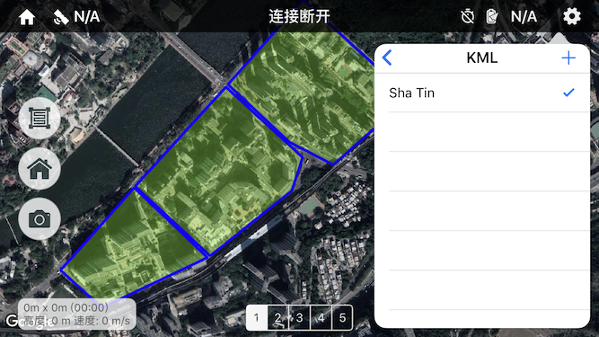
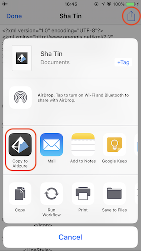
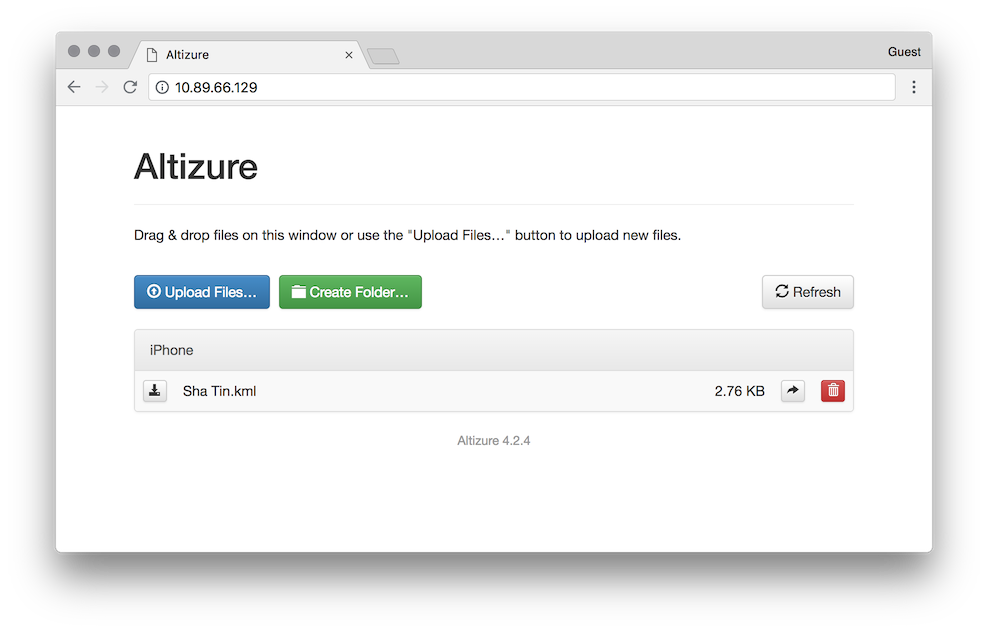

地图图层增强 (仅限 iOS)
使用 KML 图层
KML 是一种常用的用于标记和共享地理数据的格式。Altizure app iOS 版支持在内置地图上添加 KML 图层，帮助设置航线区域。
注：
- 暂时只支持 .kml 格式，不支持 .kmz
- 暂时不支持通过 KML 生成航线
显示方法
点击右上角齿轮图标进入设置面板，进入“图层”，“KML”，勾选需要显示的 KML。

导入 KML
方法一，从其他 app 导入 KML 文件：
这种方法借助其他具有文件管理或传输功能的 app （例如网盘、微信、QQ 等），将 KML 文件导入到 Altizure app 内。可以不借助其他设备，完全在手机/平板内完成。
步骤比较简单：在其他储存有 KML 文件的 app 里找到 KML，选择（或者打开文件），然后使用分享功能。系统弹出分享界面后，点击“拷贝到 Altizure”。
例如 iOS 系统自带的“文件” app：

方法二，通过电脑浏览器上传 KML 文件到 app：
通过这种方法可以直接不经过其他 app，直接从电脑传输 KML 到 Altizure app 里。此方法要求电脑和手机/平板在同一局域网内。步骤：
点击 app 右上角齿轮图标进入设置面板，进入“图层”，“KML”，点击 + 图标，选择 “Wi-Fi 上传”。
按照 app 内指示，在电脑上的浏览器里打开一个局域网内的网址（与手机/平板的 IP 地址相同）。
点击网页里的 "Upload Files" 上传本地文件。
